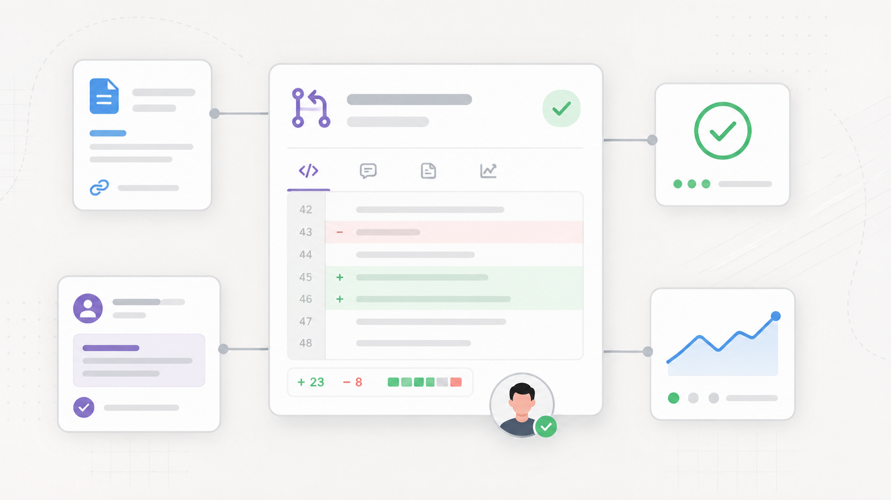
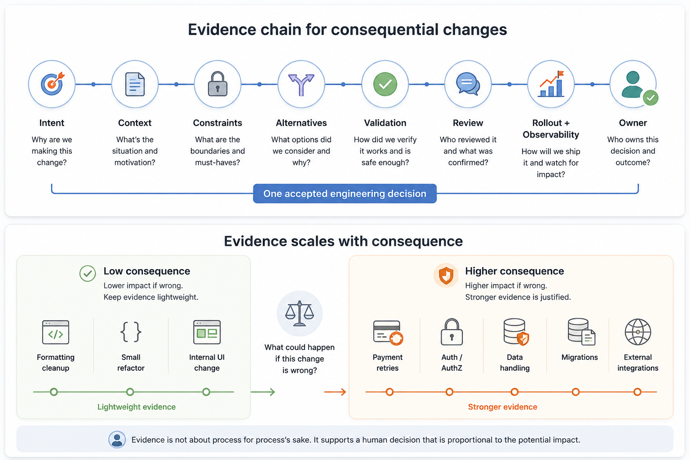

Imagine a team ships a change to payment retry behavior.
The intent is reasonable. Some payment provider failures are transient, and the system should retry them instead of failing the customer too early. A developer uses an AI coding assistant to help with the implementation and a few tests. The pull request looks clean. CI passes. Review is short because the diff is easy to read and the tests cover the obvious cases.
A few days later, production behavior looks wrong. Some payments are retried more aggressively than expected. Support sees customer complaints. Finance asks whether duplicate charges are possible. The on-call engineer starts reading the code, the PR, the issue, and the deployment history.
At this point, the team does not need a transcript of every prompt, model response, and generated attempt. It needs to reconstruct the engineering decision.
What retry behavior was intended? Which provider errors were considered transient? Were idempotency guarantees checked? Were duplicate charge scenarios considered? What tests covered retry limits, provider timeouts, partial failures, and callback races? Was the change behind a feature flag? Which metrics were expected to catch bad behavior? Who reviewed the payment domain logic? Who accepted the rollout risk?
The problem is not that AI helped write some code. The problem is that the accepted change did not leave behind enough evidence for the team to understand why it was considered safe.
That is the traceability problem AI-assisted engineering makes more visible.
Faster code production changes where teams need attention
AI coding assistants have shown productivity gains in some studies and settings, especially on bounded programming tasks. Peng, Kalliamvakou, Cihon, and Demirer studied GitHub Copilot in a controlled task where developers implemented an HTTP server in JavaScript. The Copilot group completed the task faster in that setting (arXiv).
That is useful evidence, but it does not mean AI improves every software delivery outcome. Real systems include old code, unclear requirements, external dependencies, partial failures, operational constraints, and people with incomplete context.
DORA’s 2024 Accelerate State of DevOps report is a useful caution against a simple “AI makes teams faster” story. Its AI findings discuss nuanced associations across documentation quality, code quality, review speed, approval speed, complexity, technical debt, and delivery performance (DORA 2024).
The engineering lesson is simple: faster implementation is not the whole system.
When code becomes easier to produce, review and validation can become more important parts of the engineering system. The quality of the decision matters. The ability to reconstruct that decision later matters too.
This is not unique to AI. Human-written code has always shipped with missing context. A clean diff has never guaranteed a correct decision. Passing tests have never proved the absence of production risk.
AI assistance can make the gap more painful because a change may look finished earlier. It may include implementation code, tests, comments, and refactoring that feel polished. But polished code is not the same as shared understanding.
Microsoft Research’s early work on AI pair-programming tools makes a related observation: as AI tools participate in more development tasks, developer work can shift toward assessing suggestions, not only writing code (Microsoft Research). That assessment needs context.
A reviewer cannot responsibly evaluate payment retry behavior from the diff alone. They need to know what the system is trying to guarantee.
Complete traceability is not prompt surveillance
A weak response to this problem is to say: “Log everything.”
Every prompt. Every model output. Every generation attempt. Every abandoned path. Every keystroke.
That may feel like traceability, but for most engineering review and incident-learning needs, it creates more noise than understanding. Prompt history can show how someone explored a problem. It does not necessarily explain why the final change was accepted.
A prompt transcript may contain guesses, false starts, generated code that was never used, incorrect assumptions that were later corrected, and tool-specific detail that does not matter to the production system. During an incident, the team usually needs the accepted engineering record more than the full conversation that led there.
The source of truth should be the accepted engineering decision:
- Why was this change made?
- What constraints shaped it?
- What alternatives were considered?
- How was it validated?
- Who reviewed it?
- How was it rolled out?
- Who owned the remaining risk?
This distinction matters because traceability can quickly become uncomfortable if teams treat it as monitoring developer behavior. The goal should be to help future engineers, reviewers, incident leads, and maintainers understand consequential decisions.
There are exceptions. Some regulated, legal, privacy, security, vendor evaluation, or model-debugging contexts may require additional records, including prompts or model outputs. Those requirements should be handled deliberately. Prompt logging should not be confused with the normal engineering source of truth.
NIST’s AI Risk Management Framework supports a risk-aware way of thinking about AI use: governance, context mapping, measurement, management, accountability, and transparency (NIST AI RMF 1.0). Its Generative AI Profile extends that framing to generative AI risks (NIST AI 600-1). Neither source prescribes a universal pull request workflow or says software teams must log every prompt.
The practical lesson is narrower and more useful: preserve context and accountability around important AI-assisted decisions.
Good traceability helps a future engineer reconstruct the decision. It does not collect noise for its own sake.
What an evidence chain means in practice
One useful way to frame this is an evidence chain: the connected record that lets a future engineer understand why a change was made, how it was validated, how it was reviewed, how it was delivered, and who owned the decision.

It is not one large document. It is usually the set of artifacts already present in a healthy engineering workflow:
- issue or ticket context
- design notes or ADRs when needed
- pull request description
- test changes
- CI results
- review comments
- rollout notes
- feature flag or deployment record
- dashboard, alert, or incident follow-up
This is similar in spirit to software provenance, but with a wider scope. SLSA provenance focuses on verifiable information about software artifacts, including where, when, and how something was produced (SLSA provenance). That is valuable. Consequential engineering changes also need the human side: why the change was made, which constraints mattered, and who accepted the risk.
For the payment retry example, a useful evidence chain would cover a few practical questions.
Intent and context
What behavior is changing, and why?
“Retry transient provider failures up to three times with exponential backoff” is more useful than “improve payment reliability.” It gives reviewers something concrete to check.
The PR should also explain what production issue, provider behavior, customer impact, or business rule shaped the change. Maybe a provider returns a specific timeout error that often succeeds on retry. Maybe customers are abandoning checkout after a single temporary failure. Maybe finance has a reconciliation constraint that limits how retries should work.
Without this context, a reviewer can inspect code structure, but they cannot judge whether the behavior matches the real problem.
Constraints and alternatives
For payment retries, constraints may include no duplicate charges, idempotent provider calls, maximum retry counts, provider-specific error handling, safe reconciliation, and clear customer communication.
These constraints are often more important than the implementation. If they are missing from the PR, reviewers may not know what risk they are supposed to evaluate.
It also helps to capture alternatives considered. Maybe the team considered changing provider configuration, moving retries into a queue, adjusting backoff globally, or retrying only through manual support workflows. This does not need to be a long design document. Two or three sentences are often enough to prevent future engineers from reopening the same question without context.
Validation
Tests are part of the evidence. For payment retries, useful tests might cover retry limits, backoff behavior, provider timeouts, duplicate callbacks, partial failures, idempotency keys, and non-retryable errors.
But tests are evidence, not proof. They show selected expected behaviors under selected conditions. They do not prove the absence of production risk.
For higher-consequence changes, validation may also include manual checks, sandbox provider testing, production-like failure scenarios, or a review of existing metrics. NIST’s Secure Software Development Framework reinforces the value of secure development practices, traceability, validation, and learning from issues, especially in areas with security or operational risk (NIST SSDF SP 800-218).
Review, rollout, and ownership
Public code review guidance from Google is a useful reminder that review is about more than syntax and style. Reviewers should consider design, functionality, complexity, tests, naming, comments, style, and documentation (Google Engineering Practices).
For a payment retry change, review by someone who understands the payment domain is different from review by someone who only checks code formatting and test structure. Both may be useful, but they are not the same.
The evidence chain should also show how the change will be released, monitored, and rolled back if needed. In the payment retry scenario, useful signals might include retry volume, provider error rate, duplicate authorization attempts, charge success rate, support tickets, and reconciliation mismatches.
Finally, the record should make human ownership clear. This is about ownership, not blame. Every meaningful production change carries some uncertainty. AI can assist with implementation, but it should not become the owner of an engineering decision.
Evidence should scale with consequence
The question is not “Was AI used?”
The better question is: “What could happen if this change is wrong?”
A formatting cleanup does not need a long evidence chain. A small test refactor may only need a clear PR description and passing CI. A low-risk internal UI adjustment may not need domain-owner review.
A payment retry change is different. So is an authentication change, an authorization rule, a data deletion job, a migration, a customer notification workflow, a fraud rule, or an external provider integration.
The evidence chain should scale with consequence.
This risk-based approach avoids two bad extremes. One extreme is trusting AI-assisted changes because the code looks good and tests pass. The other is adding heavy process to every AI-assisted change, including trivial edits.
NIST’s AI risk guidance is useful here because it frames AI risk management around context and risk, not one-size-fits-all ceremony. OWASP’s work on LLM application risks also calls out concerns such as overreliance and insecure output handling (OWASP Top 10 for LLM Applications). That project is focused on LLM applications rather than coding workflows, so the connection is adjacent. Still, the lesson is relevant: AI output can be useful, but it should not bypass normal engineering judgment.
A practical team might define higher-consequence areas explicitly:
- payments
- authentication and authorization
- data handling and privacy
- migrations and deletion
- customer communication
- external integrations
- production reliability controls
- security-sensitive code
- irreversible operations
Changes in those areas get stronger evidence requirements. Other changes stay lightweight.
That is engineering judgment applied to workflow design.
Implementing this inside the existing workflow
Most teams do not need a new AI governance tool to start improving evidence chains. They can adapt the workflow they already use.
Pull request templates can ask for the right information. CODEOWNERS can route changes in sensitive areas to domain owners. Protected branches can require reviews and status checks before merge. GitHub supports these mechanisms through pull request templates, CODEOWNERS, protected branches, required reviews, and required status checks (GitHub protected branches, CODEOWNERS, PR templates).
For high-consequence changes, a PR template section like this can make the right thinking visible:
## Intent
What behavior is changing, and why?
## Context
What production issue, customer case, business rule, or system constraint shaped this change?
## Risk area
Does this affect payments, auth, data handling, retries, customer communication, or external integrations?
## Alternatives
What other approaches were considered, and why were they not chosen?
## Validation
What tests, scenarios, or manual checks were performed?
## Rollout
How will this be released, monitored, and rolled back if needed?
## Ownership
Who reviewed the domain behavior, and who accepts the remaining risk?This should not become a form people fill out mechanically. The value is not in the template. The value is in the thinking the template makes visible.
The same principle appears in the “Documentation Is Like Code” chapter from Software Engineering at Google: useful documentation should be treated as part of the engineering workflow, kept close to the code where possible, and maintained over time (Abseil / Software Engineering at Google). Evidence chains work best when they live near the work: in PRs, issues, ADRs, tests, rollout notes, and incident follow-ups.
A disconnected audit document may satisfy a separate need, especially in regulated environments. But it may not help the next on-call engineer understand a payment retry incident at 2 a.m. A clear PR linked to the issue, tests, rollout plan, and dashboard has a better chance of helping.
Limits to keep in mind
There are a few important limits to this argument.
Not every change needs a strong evidence chain. If every small refactor requires a long decision record, people will either slow down unnecessarily or learn to write meaningless text. The process should scale with consequence.
Prompt logs may matter in some environments. Regulated teams, security-sensitive systems, legal review, privacy investigations, vendor evaluation, or model-debugging work may require additional records. The point is not that prompt logs are useless. The point is that they are usually not the best engineering source of truth for understanding the accepted change.
Documentation does not make a change safe. A better PR record helps reviewers ask better questions. It does not replace technical judgment, domain expertise, tests, observability, staged rollout, incident learning, or production ownership.
Repository controls are only gates. CODEOWNERS can request the right reviewers. Protected branches can require approvals and passing checks. PR templates can ask better questions. None of these guarantee that reviewers understood the risk.
AI assistance is also not the only reason teams need this. Many human-written changes lack intent, context, validation, and ownership. AI simply makes the weakness harder to ignore when code arrives faster and looks complete before the team has built shared understanding.
Three practical takeaways
First, the source of truth should be the accepted engineering decision, not the AI conversation. Prompt history may show exploration, but the durable record should explain the problem, constraints, alternatives, validation, review, rollout, and human owner.
Second, evidence should scale with consequence. A formatting cleanup does not need the same record as a payment retry change. Ask what could happen if the change is wrong, then adjust the evidence accordingly.
Third, a good evidence chain supports human judgment. It does not replace review, testing, observability, rollout discipline, or ownership. It gives people the context they need to make better decisions.
Conclusion
AI-assisted development does not remove the old responsibilities of software engineering. Teams still need to understand production behavior, validate assumptions, review tradeoffs, and own risk.
It may make those responsibilities more visible.
When a consequential change fails in production, the team rarely needs to know every prompt that was typed. It needs to understand the accepted decision: what the team intended, what constraints mattered, how the change was validated, who reviewed it, how it was rolled out, and who accepted the remaining risk.
That is the evidence chain worth preserving.
Keep it lightweight for low-risk changes. Strengthen it for payments, auth, data, migrations, external integrations, and other areas where mistakes matter.
The goal is reconstructability, not surveillance. Future engineers should be able to look back at an important AI-assisted change and understand what changed, why the team believed it was the right change to ship, and who owned the decision.